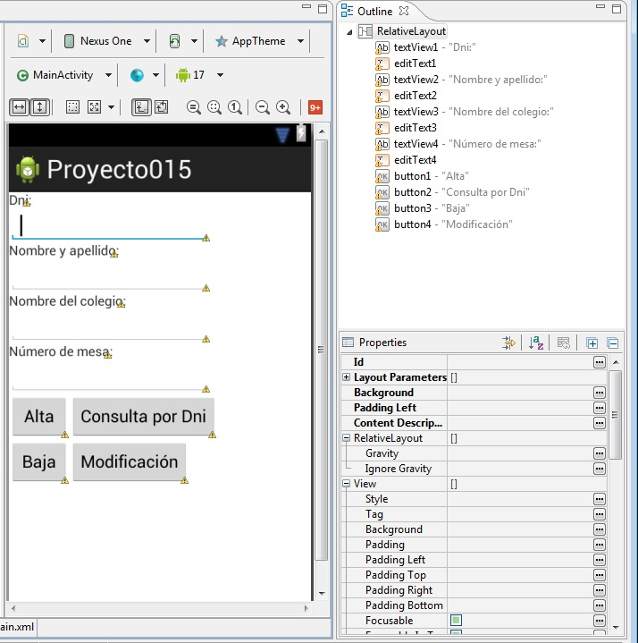

14 - Almacenamiento en una base de datos SQLiteYa se encuentra disponible el nuevo tutorial para aprender android con el nuevo entorno Android Studio propuesto por Google y que remplaza a Eclipse. |
Hemos visto hasta ahora dos modos de almacenar datos en forma permanente (archivos de texto y la clase SharedPreferences), ahora veremos otra herramienta nativa de Android para almacenar datos en una base de datos llamada SQLite.
SQLite es una base de datos Open Source, es muy popular en muchos dispositivos pequeños, como Android.
Las ventajas que presenta utilizar SQLite es que no requiere configuración, no tiene un servidor de base de datos ejecutándose en un proceso separado y es relativamente simple su empleo.
Confeccionar un programa que permita almacenar los datos de votantes de una elección. Crear la tabla votantes y definir los campos dni (documento de identidad), nombre del votante, colegio donde vota y número de mesa donde vota.
El programa debe permitir:
1 - Carga de personas. 2 - Consulta por el dni (para saber donde vota) 3 - Borrado de personas 4 - Modificación de datos.
Primero implementamos una interfaz visual similar a esta:
Lo primero que haremos es crear una clase que herede de SQLiteOpenHelper. Esta clase nos permite crear la base de datos y actualizar la estructura de tablas y datos iniciales.
Debemos implementar el constructor y sobreescribir los métodos onCreate y onUpgrade.
El método onCreate se le llama cuando la base de datos se crea por primera vez. Aquí es donde se define la estructura de las tablas y se cargan eventualmente los datos iniciales
En el método onUpgrade se llama cuando la base de datos debe ser actualizada. Tiene por objetivo eliminar tablas, añadir tablas, o hacer cualquier otra cosa que necesita para actualizarse.
En nuestro problema implementaremos una nueva clase llamada AdminSQLiteOpenHelper que herede de la clase SQLiteOpenHelper:
package com.javaya.proyecto015;
import android.content.Context;
import android.database.sqlite.SQLiteDatabase;
import android.database.sqlite.SQLiteDatabase.CursorFactory;
import android.database.sqlite.SQLiteOpenHelper;
public class AdminSQLiteOpenHelper extends SQLiteOpenHelper {
public AdminSQLiteOpenHelper(Context context, String nombre, CursorFactory factory, int version) {
super(context, nombre, factory, version);
}
@Override
public void onCreate(SQLiteDatabase db) {
db.execSQL("create table votantes(dni integer primary key, nombre text, colegio text, nromesa integer)");
}
@Override
public void onUpgrade(SQLiteDatabase db, int versionAnte, int versionNue) {
db.execSQL("drop table if exists votantes");
db.execSQL("create table votantes(dni integer primary key, nombre text, colegio text, nromesa integer)");
}
}
En el constructor solo llamamos al constructor de la clase padre pasando los datos que llegan en los parámetros:
public AdminSQLiteOpenHelper(Context context, String nombre, CursorFactory factory, int version) {
super(context, nombre, factory, version);
}
En el método onCreate procedemos a crear la tabla votantes con los cuatro campos respectivos y definiendo el campo dni como primary key:
public void onCreate(SQLiteDatabase db) {
db.execSQL("create table votantes(dni integer primary key, nombre text, colegio text, nromesa integer)");
}
En el método onUpgrade procedemos a borrar la tabla votantes y crear nuevamente la tabla (en este caso con la misma estructura pero podría ser otra en un caso más real:
public void onUpgrade(SQLiteDatabase db, int versionAnte, int versionNue) {
db.execSQL("drop table if exists votantes");
db.execSQL("create table votantes(dni integer primary key, nombre text, colegio text, nromesa integer)");
}
Ahora veamos la otra clase que implementará las altas, bajas, modificaciones y consultas:
package com.javaya.proyecto015;
import android.app.Activity;
import android.content.ContentValues;
import android.database.Cursor;
import android.database.sqlite.SQLiteDatabase;
import android.os.Bundle;
import android.view.Menu;
import android.view.View;
import android.widget.EditText;
import android.widget.Toast;
public class MainActivity extends Activity {
private EditText et1, et2, et3, et4;
@Override
protected void onCreate(Bundle savedInstanceState) {
super.onCreate(savedInstanceState);
setContentView(R.layout.activity_main);
et1 = (EditText) findViewById(R.id.editText1);
et2 = (EditText) findViewById(R.id.editText2);
et3 = (EditText) findViewById(R.id.editText3);
et4 = (EditText) findViewById(R.id.editText4);
}
@Override
public boolean onCreateOptionsMenu(Menu menu) {
// Inflate the menu; this adds items to the action bar if it is present.
getMenuInflater().inflate(R.menu.activity_main, menu);
return true;
}
public void alta(View v) {
AdminSQLiteOpenHelper admin = new AdminSQLiteOpenHelper(this,
"administracion", null, 1);
SQLiteDatabase bd = admin.getWritableDatabase();
String dni = et1.getText().toString();
String nombre = et2.getText().toString();
String colegio = et3.getText().toString();
String nromesa = et4.getText().toString();
ContentValues registro = new ContentValues();
registro.put("dni", dni);
registro.put("nombre", nombre);
registro.put("colegio", colegio);
registro.put("nromesa", nromesa);
bd.insert("votantes", null, registro);
bd.close();
et1.setText("");
et2.setText("");
et3.setText("");
et4.setText("");
Toast.makeText(this, "Se cargaron los datos de la persona",
Toast.LENGTH_SHORT).show();
}
public void consulta(View v) {
AdminSQLiteOpenHelper admin = new AdminSQLiteOpenHelper(this,
"administracion", null, 1);
SQLiteDatabase bd = admin.getWritableDatabase();
String dni = et1.getText().toString();
Cursor fila = bd.rawQuery(
"select nombre,colegio,nromesa from votantes where dni=" + dni, null);
if (fila.moveToFirst()) {
et2.setText(fila.getString(0));
et3.setText(fila.getString(1));
et4.setText(fila.getString(2));
} else
Toast.makeText(this, "No existe una persona con dicho dni",
Toast.LENGTH_SHORT).show();
bd.close();
}
public void baja(View v) {
AdminSQLiteOpenHelper admin = new AdminSQLiteOpenHelper(this,
"administracion", null, 1);
SQLiteDatabase bd = admin.getWritableDatabase();
String dni = et1.getText().toString();
int cant = bd.delete("votantes", "dni=" + dni, null);
bd.close();
et1.setText("");
et2.setText("");
et3.setText("");
et4.setText("");
if (cant == 1)
Toast.makeText(this, "Se borró la persona con dicho documento",
Toast.LENGTH_SHORT).show();
else
Toast.makeText(this, "No existe una persona con dicho documento",
Toast.LENGTH_SHORT).show();
}
public void modificacion(View v) {
AdminSQLiteOpenHelper admin = new AdminSQLiteOpenHelper(this,
"administracion", null, 1);
SQLiteDatabase bd = admin.getWritableDatabase();
String dni = et1.getText().toString();
String nombre = et2.getText().toString();
String colegio = et3.getText().toString();
String nromesa = et4.getText().toString();
ContentValues registro = new ContentValues();
registro.put("nombre", nombre);
registro.put("colegio", colegio);
registro.put("nromesa", nromesa);
int cant = bd.update("votantes", registro, "dni=" + dni, null);
bd.close();
if (cant == 1)
Toast.makeText(this, "se modificaron los datos", Toast.LENGTH_SHORT)
.show();
else
Toast.makeText(this, "no existe una persona con dicho documento",
Toast.LENGTH_SHORT).show();
}
}
1 - Alta de datos.
Cuando se presiona el botón alta se ejecuta el método "alta" recordemos inicializar la propiedad "OnClick" del botón desde la ventana de visualización del archivo XML.
Lo primero que hacemos en este método es crear un objeto de la clase que planteamos anteriormente y le pasamos al constructor this (referencia del Activity actual), "administracion" (es el nombre de la base de datos que crearemos en el caso que no exista) luego pasamos null y un uno indicando que es la primer versión de la base de datos (en caso que cambiemos la estructura o agreguemos tablas por ejemplo podemos pasar un dos en lugar de un uno para que se ejecute el método onUpgrade donde indicamos la nuestra estructura de la base de datos)
Luego de crear un objeto de la clase AdminSqLiteOpenHelper procedemos a crear un objeto de la clase SQLiteDataBase llamando al método getWritableDatabase (la base de datos se abre en modo lectura y escritura).
Creamos un objeto de la clase ContentValues y mediante el método put inicializamos todos tos campos a cargar.
Seguidamente llamamos al método insert de la clase SQLiteDatabase pasando en el primer parámetro el nombre de la tabla, como segundo parámetro un null y por último el objeto de la clase ContentValues ya inicializado (este método es el que provoca que se inserte una nueva fila en la tabla votantes en la base de datos llamada administracion)
Borramos seguidamente los EditText y mostramos un mensaje para que conozca el operador que el alta de datos se efectuó en forma correcta:
public void alta(View v) {
AdminSQLiteOpenHelper admin=new AdminSQLiteOpenHelper(this, "administracion", null, 1);
SQLiteDatabase bd=admin.getWritableDatabase();
String dni=et1.getText().toString();
String nombre=et2.getText().toString();
String colegio=et3.getText().toString();
String nromesa=et4.getText().toString();
ContentValues registro=new ContentValues();
registro.put("dni",dni );
registro.put("nombre",nombre );
registro.put("colegio",colegio );
registro.put("nromesa",nromesa );
bd.insert("votantes", null, registro);
bd.close();
et1.setText("");
et2.setText("");
et3.setText("");
et4.setText("");
Toast.makeText(this, "Se cargaron los datos de la persona", Toast.LENGTH_SHORT).show();
}
2 - Consulta de datos.
Cuando se presiona el botón "Consulta por DNI" se ejecuta el método consulta:
public void consulta(View v) {
AdminSQLiteOpenHelper admin=new AdminSQLiteOpenHelper(this, "administracion", null, 1);
SQLiteDatabase bd=admin.getWritableDatabase();
String dni=et1.getText().toString();
Cursor fila=bd.rawQuery("select nombre,colegio,nromesa from votantes where dni="+dni+"",null);
if (fila.moveToFirst())
{
et2.setText(fila.getString(0));
et3.setText(fila.getString(1));
et4.setText(fila.getString(2));
}
else
Toast.makeText(this, "No existe una persona con dicho dni", Toast.LENGTH_SHORT).show();
bd.close();
}
En el método consulta lo primero que hacemos es crear un objeto de la clase AdminSQLiteOpenHelper y obtener una referencia de la base de datos llamando al método getWritableDatabase.
Seguidamente definimos una variable de la clase Cursor y la inicializamos con el valor devuelto por el método llamado rawQuery.
La clase Cursos almacena en este caso una fila o cero filas (una en caso que hayamos ingresado un dni existente en la tabla votantes), llamamos al método moveToFirst() de la clase Cursos y retorna true en caso de existir una persona con el dni ingresado, en caso contrario retorna cero.
Para recuperar los datos propiamente dichos que queremos consultar llamamos al método getString y le pasamos la posición del campo a recuperar (comienza a numerarse en cero, en este ejemplo la columna cero representa el campo nombre, la columna 1 representa el campo colegio y la columna 2 representa el campo nromesa)
3 - Baja o borrado de datos.
Para borrar uno o más registros la clase SQLiteDatabase tiene un método que le pasamos en el primer parámetro el nombre de la tabla y en el segundo la condición que debe cumplirse para que se borre la fila de la tabla. El método delete retorna un entero que indica la cantidad de registros borrados:
public void baja(View v) {
AdminSQLiteOpenHelper admin=new AdminSQLiteOpenHelper(this, "administracion", null, 1);
SQLiteDatabase bd=admin.getWritableDatabase();
String dni=et1.getText().toString();
int cant=bd.delete("votantes", "dni="+dni+"",null);
bd.close();
et1.setText("");
et2.setText("");
et3.setText("");
et4.setText("");
if (cant==1)
Toast.makeText(this, "Se borró la persona con dicho documento", Toast.LENGTH_SHORT).show();
else
Toast.makeText(this, "No existe una persona con dicho documento", Toast.LENGTH_SHORT).show();
}
4 - Modificación de datos.
En la modificación de datos debemos crear un objeto de la clase ContentValues y mediante el método put almacenar los valores para cada campo que será modificado. Luego se llama al método update de la clase SQLiteDatabase pasando el nombre de la tabla, el objeto de la clase ContentValues y la condición del where (el cuanto parámetro en este ejemplo no se lo emplea)
public void modificacion(View v) {
AdminSQLiteOpenHelper admin=new AdminSQLiteOpenHelper(this, "administracion", null, 1);
SQLiteDatabase bd=admin.getWritableDatabase();
String dni=et1.getText().toString();
String nombre=et2.getText().toString();
String colegio=et3.getText().toString();
String nromesa=et4.getText().toString();
ContentValues registro=new ContentValues();
registro.put("nombre",nombre);
registro.put("colegio",colegio);
registro.put("nromesa",nromesa);
int cant = bd.update("votantes", registro, "dni="+dni, null);
bd.close();
if (cant==1)
Toast.makeText(this, "se modificaron los datos", Toast.LENGTH_SHORT).show();
else
Toast.makeText(this, "no existe una persona con dicho documento", Toast.LENGTH_SHORT).show();
}
Este proyecto lo puede descargar en un zip desde este enlace: proyecto015.zip